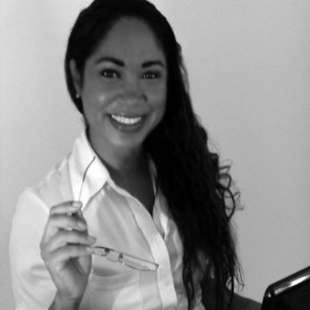

Robótica Educacional
Projetos e aulas com Lego Education, Arduino, Raspberry Pi e Unplugged Coding.
Portfólio profissional
Bem-vindo(a) à minha página de projetos. Aqui apresento trabalhos em Robótica Educacional, abordagens maker e projetos de webdesign com foco em aprendizagem criativa e significativa.
Atuo com Robótica Educacional, Webdesign e desenvolvimento de experiências de aprendizagem. Minha proposta é unir criatividade, colaboração e solução de problemas em contextos reais, com abordagem mão na massa e gamificação.
Neste portfólio você encontra artigos, planos de aula e projetos autorais, além de referências para práticas educacionais e tecnológicas.
Curriculum Vitae: CNPq Lattes
Projetos e aulas com Lego Education, Arduino, Raspberry Pi e Unplugged Coding.
Integração entre ciência, tecnologia, engenharia, artes e matemática com foco pedagógico.
Criação de sites em WordPress e interfaces em HTML5, CSS, Bootstrap e JavaScript.
Projetos reais com print screen e links diretos, em formato carrossel com setas laterais.
Seleção de aulas em vídeo no mesmo formato de cards em carrossel.
Espaço preparado para sua foto profissional e imagens inspiradoras no mesmo conceito de cards em carrossel. Você pode substituir os arquivos em elaine-site-static/images sem alterar o código.

Sou educadora, tecnóloga e criadora de experiências de aprendizagem que realmente funcionam. Com mestrado em Ciência da Computação, atuo na interseção entre educação e tecnologia — um espaço cheio de possibilidades, robôs curiosos e ideias que tomam forma.
Acredito que aprender deve ser uma aventura. Por isso desenvolvo aulas, projetos e sites que colocam as pessoas no centro: seja uma criança montando seu primeiro robô com Lego, seja um empreendedor vendo seu negócio ganhar vida na web.
Trabalhei com metodologias STEAM, robótica educacional, Arduino, Raspberry Pi e ferramentas maker em contextos reais. No webdesign, crio interfaces em HTML5, CSS, WordPress e JavaScript — sempre com cuidado na usabilidade e na identidade visual.
Cada projeto que assumo carrega o mesmo compromisso: entregar algo que inspire, que funcione bem e que conte uma história verdadeira.
Projetos de aulas de robótica ou um novo webdesign? Adoraria ouvir você.
Email: elaine.c.bundscherer@elaine-online.de
LinkedIn: linkedin.com/in/elainebundscherer
Facebook: facebook.com/elaine.bundscherer